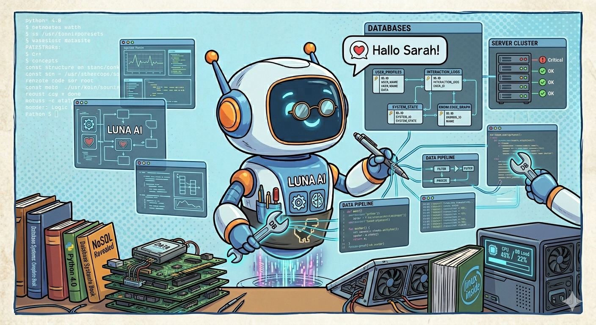
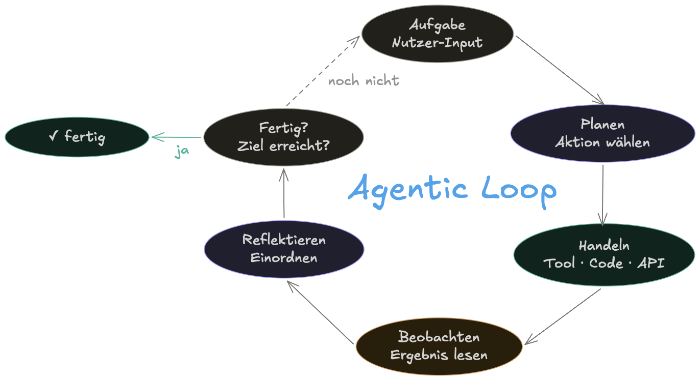
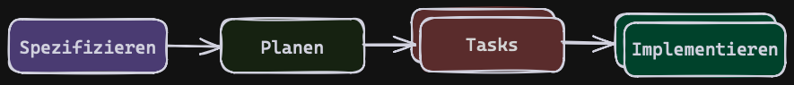
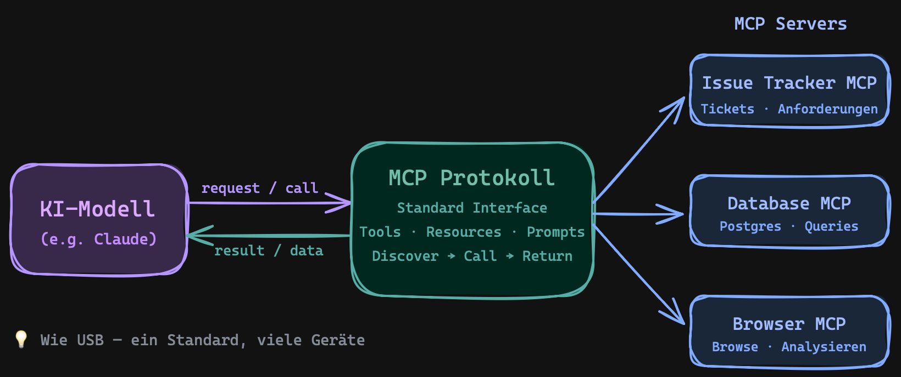

explore Subagent erkundetgeneral Suagent für allgemeine Aufgaben
# Feature: Push einer einzelnen Police kann manuell ausgelöst werden
Füge einen Button auf der Policen-Seite hinzu, um diese einzelne Police
an den Schaden Service zu übertragen.
Der Policen-Push kann mit einer Policen-Nummer (z.B. AXG0F)
ausgelöst werden und gibt HTTP-Status 200 zurück, wenn erfolgreich.
Bei erfolgreichem Push wird der Benutzer mit einer
Growl-Benachrichtigung informiert.
## Request
POST http://localhost:9090/api/v1/claim-info/policy/AXG0F/push
## Response
HTTP/1.1 200
[Response body is empty]
Response code: 200; Time: 84ms (84 ms); Content length: 0 bytes (0 B)
Plan ModusBuild Modus
[System-Prompt] + [Chatverlauf] + [Tool-Aufruf] + [Deine Frage]
↑ ↑ ↑ ↑
└──────────────────── Context Window ─────────────┘
User: "Wie wird das Wetter morgen in Hamburg?"
Modell: → ruft Tool auf:
{ tool: "weather_fetch",
input: { city: "Hamburg", date: "morgen" } }
Tool: → gibt zurück:
{ temp: "18°C", rain: "30%", wind: "15 km/h" }
Modell: → liest Ergebnis & antwortet:
"Morgen in Hamburg: 18°C, leichter Regen möglich."
/compactAGENTS.md/initnpm run dev)
| Tool | Beschreibung |
|---|---|
list_schemas |
Ermittelt die verfügbaren Datenbank Schemata |
list_objects |
Ermittelt Tabellen, Views, Sequences der DB |
execute_sql |
Führt SQL Queries aus |
👉 Aufruf mit /my-command
👉 Aktivierung und Aufruf durch Agent
Agent = erledigt Aufgabe in eigenem Kontext
"Prüfe die Änderungen mit @review Agent"| 💬 Command | 🧑🔬 Skill | 🤖 Agent | |
|---|---|---|---|
| Was? | Prompt Vorlage | Wissen das bei Bedarf aktiviert wird | Unter-Session für eigene Aufgabe |
| Wie aufrufen? | Du (manuell /cmd) |
Der Agent selbst | Der Agent selbst oder Du via @ |
| Kontext | im aktuellen Kontext | im aktuellen Kontext | eigener isolierter Kontext |
| KI-Modell | aktuelles Modell | aktuelles Modell | eigenes Modell möglich |
| Berechtigungen | wie aktueller Agent | wie aktueller Agent | eigene, konfigurierbare Berechtigungen |
| 💣 Datenleck | Sensible Informationen im LLM Kontext |
| 💣 Prompt Injection | Versteckte bösartige Anweisungen in Prompts |
| 💣 Böse Supply Chain | Agent installiert schadhafte NPM/pip-Pakete |
| 💣 Böse Skills/MCP-Server | Skills oder MCP-Server nutzen Prompt Injection |
🧐 Agenten Berechtigungen prüfen und regeln
🏖️ Sandbox für Agent statt Vollzugriff (Docker )